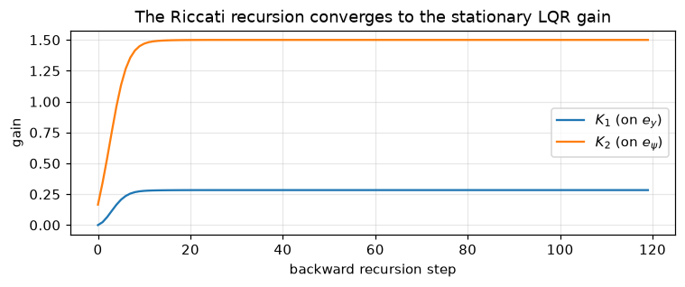
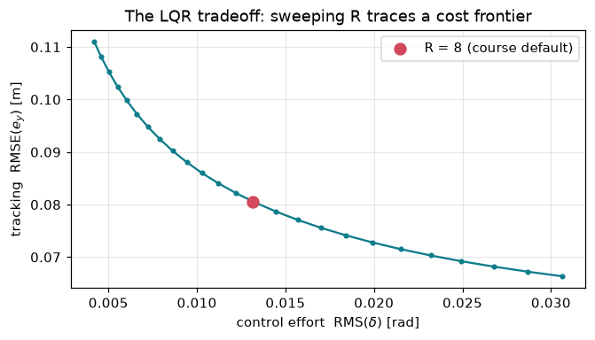
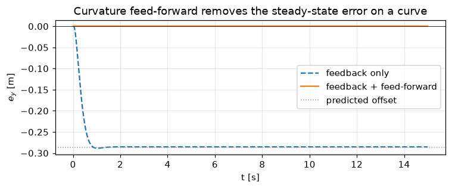
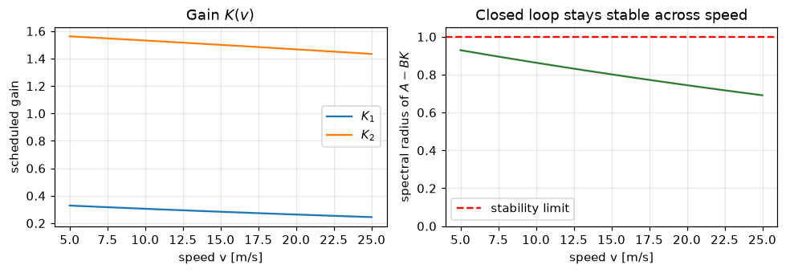

Goal. Design the feedback law u_k=\pi(\hat x_k) that regulates the lane-error
state to zero. We derive the linear-quadratic regulator (LQR) from first
principles via dynamic programming, solve its Riccati equation numerically, prove
the closed loop is stable, learn to choose the weights, add curvature
feed-forward, and make the gain adapt to speed.
We reuse the discrete linear model from notebook 01,
x_{k+1}=A x_k + B\,\delta_k + E\,\kappa_k, with
Q prices tracking error (how quickly to return to the lane) and R prices
control (how hard to steer). The quadratic form is not arbitrary: for a linear
plant it makes the problem convex and yields a linear optimal feedback with a
closed-form solution [1,2]. Larger R relative to Q gives gentler steering;
larger Q gives tighter tracking. Section 4 makes that tradeoff quantitative.
2. Deriving LQR by dynamic programming
Take the finite-horizon version with terminal weight P_N=Q_f and apply the
principle of optimality. Guess that the optimal cost-to-go from state x at step
k is quadratic, V_k(x)=x^\top P_k x. The Bellman equation is
V_k(x)=\min_{\delta}\Big[\,x^\top Q x + \delta^\top R\,\delta + V_{k+1}(Ax+B\delta)\,\Big].
Substituting V_{k+1}(x')=x'^\top P_{k+1}x', the bracket is quadratic and convex in
\delta (its Hessian R+B^\top P_{k+1}B\succ 0); setting the gradient to zero
gives a linear optimal control \delta_k=-K_k x_k with
K_k=(R+B^\top P_{k+1}B)^{-1}B^\top P_{k+1}A.
Back-substituting produces the backward Riccati recursion
As the horizon N\to\infty the sequence P_k converges (under the conditions in
section 3) to a constant P, the control becomes the stationary feedback
\delta_k=-Kx_k, and P solves the algebraic equation of section 3. Full
derivations are in [2,3]. Let us watch that convergence numerically.
import numpy as np, matplotlib.pyplot as plt
L, Ts, V, DMAX = 2.7, 0.05, 15.0, 0.6
def linear_model(v=V):
return (np.array([[1., v*Ts],[0., 1.]]),
np.array([[0.],[v*Ts/L]]),
np.array([[0.],[-v*Ts]]))
A, B, E = linear_model()
Q = np.diag([1.0, 5.0]); R = np.array([[8.0]])
# backward Riccati recursion from a terminal cost P_N = Q
P = Q.copy(); gains = []
for _ in range(120):
K = np.linalg.solve(R + B.T@P@B, B.T@P@A)
gains.append(K.ravel().copy())
P = Q + A.T@P@A - A.T@P@B@K
gains = np.array(gains)
plt.figure(figsize=(7, 3))
plt.plot(gains[:,0], label="$K_1$ (on $e_y$)")
plt.plot(gains[:,1], label="$K_2$ (on $e_\\psi$)")
plt.xlabel("backward recursion step"); plt.ylabel("gain")
plt.title("The Riccati recursion converges to the stationary LQR gain")
plt.legend(); plt.grid(alpha=.3); plt.tight_layout(); plt.show()
print("stationary gain K =", gains[-1])

stationary gain K = [0.28335712 1.50012967]
3. The discrete algebraic Riccati equation (DARE)
The stationary P is the symmetric positive-semidefinite solution of
\boxed{\;P = Q + A^\top P A - A^\top P B\,(R+B^\top P B)^{-1}B^\top P A\;}
\qquad K=(R+B^\top P B)^{-1}B^\top P A.
When does a good solution exist? If (A,B) is stabilizable and
(A,Q^{1/2}) is detectable, the DARE has a unique symmetric PSD solution P for
which the closed loop A-BK is Schur stable - all eigenvalues strictly inside
the unit circle [2,5]. Our (A,B) is controllable (notebook 01) and
Q=\mathrm{diag}(1,5)\succ 0, so (A,Q^{1/2}) is trivially detectable; both
conditions hold.
How real solvers do it. Production code uses a numerically robust Schur /
generalized-eigenvalue method on the associated Hamiltonian pencil [8] (e.g.
scipy.linalg.solve_discrete_are). To keep the course dependency-free we iterate
the recursion to its fixed point and verify the result by checking the DARE
residual.
def dlqr(A, B, Q, R, iters=1000, tol=1e-14):
P = Q.copy()
for _ in range(iters):
Pn = Q + A.T@P@A - A.T@P@B@np.linalg.solve(R + B.T@P@B, B.T@P@A)
if np.max(np.abs(Pn - P)) < tol:
P = Pn; break
P = Pn
K = np.linalg.solve(R + B.T@P@B, B.T@P@A)
return K, P
K, P = dlqr(A, B, Q, R)
residual = Q + A.T@P@A - A.T@P@B@np.linalg.solve(R + B.T@P@B, B.T@P@A) - P
print("K =", K.ravel())
print("DARE residual (max abs entry) = %.2e <- should be ~ machine zero" % np.max(np.abs(residual)))
K = [0.28335712 1.50012967]
DARE residual (max abs entry) = 7.11e-15 <- should be ~ machine zero
# Closed-loop stability: eigenvalues of (A - B K) must lie inside the unit circle
ev = np.linalg.eigvals(A - B@K)
th = np.linspace(0, 2*np.pi, 300)
plt.figure(figsize=(4.2, 4.2))
plt.plot(np.cos(th), np.sin(th), 'k', lw=.8)
plt.scatter(ev.real, ev.imag, s=60, color="#2e7d32", zorder=3)
plt.axhline(0, color=".7", lw=.5); plt.axvline(0, color=".7", lw=.5)
plt.gca().set_aspect("equal")
plt.title("Closed-loop poles (inside the unit circle)")
plt.xlabel("Re"); plt.ylabel("Im"); plt.grid(alpha=.3); plt.tight_layout(); plt.show()
print("eigenvalues:", np.round(ev, 4), " spectral radius = %.3f" % np.max(np.abs(ev)))
then tune by hand. Because only the ratioQ/R matters, sweeping R traces a
frontier between tracking accuracy and control effort - the fundamental LQR
tradeoff. Each point below is a fully re-solved controller simulated on the same
recovery manoeuvre.
def sim_recovery(K, kappa=0.0, x0=(0.5, 0.0), n=200, ff=False):
x = np.array(x0, float); ey, du = [], []
for _ in range(n):
d = (np.arctan(L*kappa) if ff else 0.0) - float((K@x).ravel()[0])
d = np.clip(d, -DMAX, DMAX); ey.append(x[0]); du.append(d)
x = np.array([x[0] + V*np.sin(x[1])*Ts, x[1] + (V/L*np.tan(d) - V*kappa)*Ts])
return np.sqrt(np.mean(np.square(ey))), np.sqrt(np.mean(np.square(du)))
Rs = np.geomspace(0.5, 200, 25)
pts = np.array([sim_recovery(dlqr(A, B, Q, np.array([[r]]))[0]) for r in Rs])
star = sim_recovery(dlqr(A, B, Q, np.array([[8.0]]))[0])
plt.figure(figsize=(6.2, 3.6))
plt.plot(pts[:,1], pts[:,0], '-o', ms=3, color="#0e7c8b")
plt.scatter(star[1], star[0], s=70, color="#d1495b", zorder=3, label="R = 8 (course default)")
plt.xlabel("control effort RMS($\\delta$) [rad]")
plt.ylabel("tracking RMSE($e_y$) [m]")
plt.title("The LQR tradeoff: sweeping R traces a cost frontier")
plt.legend(); plt.grid(alpha=.3); plt.tight_layout(); plt.show()
print("small R (aggressive): RMSE %.3f, effort %.3f" % tuple(pts[0]))
print("large R (gentle) : RMSE %.3f, effort %.3f" % tuple(pts[-1]))

small R (aggressive): RMSE 0.066, effort 0.031
large R (gentle) : RMSE 0.111, effort 0.004
5. Feed-forward: a two-degree-of-freedom controller
Pure feedback leaves a steady-state error on a curve, because holding a bend
needs a nonzero steering angle that error-driven feedback only supplies once an
error already exists. For a constant curvature \kappa the linear closed loop
settles at
and the command becomes \delta=\delta_{ff}-Kx. This is a two-degree-of-freedom
design: feedback shapes the transient and rejects disturbances, feed-forward
handles the known geometry. Because \delta_{ff} comes from the map, not the
camera, it stays valid in the full system even when perception is untrusted and
authority shifts to the driver (notebook 07).
kappa = 0.03
K, P = dlqr(A, B, Q, R)
x_ss = np.linalg.solve(np.eye(2) - (A - B@K), (E*kappa).ravel())
print("feedback only: predicted steady-state e_y = %.3f m" % x_ss[0])
def run(ff):
x = np.array([0.0, 0.0]); H = [x]
for _ in range(300):
d = (np.arctan(L*kappa) if ff else 0.0) - float((K@x).ravel()[0])
d = np.clip(d, -DMAX, DMAX)
x = np.array([x[0] + V*np.sin(x[1])*Ts, x[1] + (V/L*np.tan(d) - V*kappa)*Ts]); H.append(x)
return np.array(H)
t = np.arange(301)*Ts
plt.figure(figsize=(7, 3))
plt.plot(t, run(False)[:,0], '--', label="feedback only")
plt.plot(t, run(True)[:,0], label="feedback + feed-forward")
plt.axhline(0, color='k', lw=.5)
plt.axhline(x_ss[0], color='.6', ls=':', lw=1, label="predicted offset")
plt.xlabel("t [s]"); plt.ylabel("$e_y$ [m]")
plt.title("Curvature feed-forward removes the steady-state error on a curve")
plt.legend(); plt.grid(alpha=.3); plt.tight_layout(); plt.show()

feedback only: predicted steady-state e_y = -0.286 m
6. Gain scheduling: a linear-parameter-varying controller
A and B depend on the speed v, so a single gain is optimal only at one speed.
Since the integrity monitor will later slow the car down under low trust
(notebook 07), we recompute K(v) per speed - a gain-scheduled or
linear-parameter-varying (LPV) controller [7], with v as the scheduling
parameter. The scheduled design keeps the closed loop comfortably stable across
the whole operating range.
vs = np.linspace(5, 25, 21)
Kv, rho = [], []
for v in vs:
Av, Bv, _ = linear_model(v)
Kg = dlqr(Av, Bv, Q, R)[0]
Kv.append(Kg.ravel()); rho.append(np.max(np.abs(np.linalg.eigvals(Av - Bv@Kg))))
Kv = np.array(Kv)
fig, ax = plt.subplots(1, 2, figsize=(9, 3.2))
ax[0].plot(vs, Kv[:,0], label="$K_1$"); ax[0].plot(vs, Kv[:,1], label="$K_2$")
ax[0].set(xlabel="speed v [m/s]", ylabel="scheduled gain", title="Gain $K(v)$")
ax[0].legend(); ax[0].grid(alpha=.3)
ax[1].plot(vs, rho, color="#2e7d32"); ax[1].axhline(1, ls="--", color="r", label="stability limit")
ax[1].set(xlabel="speed v [m/s]", ylabel="spectral radius of $A-BK$",
title="Closed loop stays stable across speed", ylim=(0, 1.05))
ax[1].legend(); ax[1].grid(alpha=.3); plt.tight_layout(); plt.show()

7. Two classical facts worth knowing
Robustness. Full-state LQR is not only optimal, it is robust: the
continuous-time regulator has a guaranteed gain margin of (\tfrac12,\infty) and a
phase margin of at least 60^\circ at each input, from the return-difference
inequality [2,6]. (The discrete-time picture is analogous; the clean margins are
the continuous-time result.) This is part of why LQR is such a strong baseline.
We do not actually measure the state. LQR assumes access to x. In the full
system the controller sees only the noisy perception estimate, so we pair LQR with
a state estimator - the Kalman filter of notebook 05. The separation principle
states that the optimal LQG controller is exactly the LQR gain applied to the
Kalman estimate, and the two may be designed independently [2].
Exercises
Re-derive K_k by setting the gradient of the Bellman right-hand side to zero.
Where is convexity (hence a unique minimiser) used?
If scipy is available, replace the Riccati iteration with
scipy.linalg.solve_discrete_are and confirm the gains match to machine precision.
Apply the gain designed at v=15 at v=6 (no rescheduling). Does the loop stay
stable? Compare its poles to the scheduled design.
Use Bryson's rule with e_{y,\max}=0.5 m, e_{\psi,\max}=0.1 rad,
\delta_{\max}=0.2 rad to choose Q,R; compare the resulting gain to the default.
References
R. E. Kalman. Contributions to the theory of optimal control. Boletin de la Sociedad Matematica Mexicana, 5:102-119, 1960.
B. D. O. Anderson, J. B. Moore. Optimal Control: Linear Quadratic Methods. Prentice Hall, 1990.
D. P. Bertsekas. Dynamic Programming and Optimal Control, Vol. I. Athena Scientific, 2017.
A. E. Bryson, Y.-C. Ho. Applied Optimal Control. Hemisphere, 1975. (Bryson's rule for weight selection.)
P. Lancaster, L. Rodman. Algebraic Riccati Equations. Oxford University Press, 1995.
M. G. Safonov, M. Athans. Gain and phase margin for multiloop LQG regulators. IEEE Transactions on Automatic Control, 22(2):173-179, 1977. doi:10.1109/TAC.1977.1101251
A. J. Laub. A Schur method for solving algebraic Riccati equations. IEEE Transactions on Automatic Control, 24(6):913-921, 1979. doi:10.1109/TAC.1979.1102178
R. Rajamani. Vehicle Dynamics and Control, 2nd ed. Springer, 2012. (Lane-keeping error dynamics.)